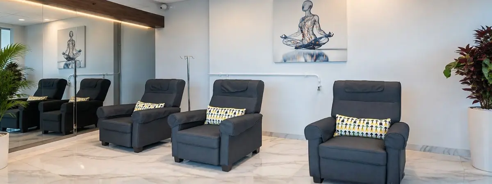
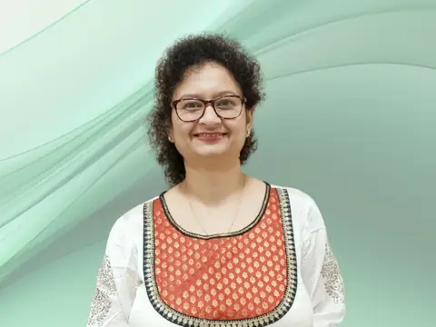
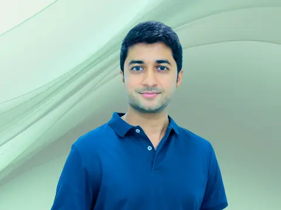

IV nutrient therapySupportive
Trim & Tone Elixir
Supports fat metabolism, energy and training alongside your plan.
Best for
- Stuck at a plateau
- Postpartum weight
- Active people and fitness beginners
Eating less and moving more works for a while, then stops. Or the weight comes back. Usually something underneath hasn't been looked at yet.
See why it stalls ↓Body fat isn't only stored energy. It's run by hormones, sleep, muscle and blood sugar. When one of those is off, eating less and moving more works for a while, then stops.
South Asian bodies carry risk earlier. At the same BMI, South Asians tend to carry more body fat, and more of it around the organs. The WHO recommends lower BMI action points for Asian populations1, and one well-known comparison found more than double the body fat in an Indian man of the same BMI as a European man2.
A BMI of 24 reads as "normal" on the global scale. On the Asian scale it's already in the increased-risk band.
Established physiology. What is proven about each treatment is labelled in the next section.
When cells stop responding well to insulin, the body produces more of it. High insulin makes stored fat harder to release, especially around the waist. It often shows up in bloodwork years before diabetes does.
An underactive thyroid slows energy use and is common, particularly in women. It's a simple blood test, and it's worth ruling out before blaming effort.
PCOS is tightly linked to insulin resistance. Menopause shifts where fat is stored. Low testosterone in men makes muscle harder to keep. Each changes what a sensible plan looks like.
Short sleep raises hunger and changes what you lose. In one controlled trial, people on the same diet lost noticeably less fat and more muscle when their sleep was cut short3.
Muscle is the tissue that uses most of your blood sugar. Crash diets strip it away, which is one reason weight comes back. Protecting muscle is part of the plan from day one.
Hunger and fullness are controlled by gut and brain hormones, not just discipline. After weight loss the body pushes hunger up to win the weight back. That's biology, and it can be planned for.
Fat in the liver is common in Indian adults, including slim ones, and it worsens insulin resistance. It's usually silent and often reverses with the right changes.
Some common medicines, including certain antidepressants, steroids and diabetes drugs, can make weight harder to lose. Never stop one on your own. Bring the list and the doctor will review it.
Each approach is labelled by how strong the human evidence is. Most people need more than one.
Losing weight needs an energy deficit. That part is settled. What isn't one-size-fits-all is how you get there: what you eat, when, and how much your blood sugar and appetite allow.
Crash diets lose weight fast, and much of it is muscle and water. We plan for a pace you can hold and food you'll actually eat, Indian food included.
Eating enough protein and lifting weights while in a deficit protects muscle. In one trial, a higher-protein group lost more fat and gained muscle on the same calorie deficit4.
This is what decides whether you end up lighter or actually leaner. It matters even more if medication is part of the plan, because rapid loss takes muscle with it.
Newer medicines that act on appetite hormones produced average losses of roughly 15–20% of body weight in large trials, alongside lifestyle changes56.
They are prescription-only, not right for everyone, and not a shortcut. When people stopped, most regained a large share of the weight within a year7. That is why we only consider them inside a plan that builds muscle and habits.
Your doctor decides if medication has a role. You can't book it on its own.
Better sleep won't melt fat by itself, but poor sleep undermines everything else. In a controlled trial, short sleep cut the share of weight lost as fat on the same diet3.
It's a small study, so treat it as direction, not a precise number. In practice, fixing sleep is often what makes the rest of the plan stick.
Most products sold for weight loss have little good evidence in humans. Some support a specific deficiency your bloodwork shows. Few do much beyond that.
If you're low in something, correcting it helps you feel better and train better. We'll tell you what's worth taking and what's worth skipping.
Three findings that shape how we build every plan. Small trials are labelled as small.
Same diet for 14 days, 10 adults. Less sleep meant less fat and more lean mass lost.3
4 weeks, same calorie deficit plus training, 40 young men.4
A year after stopping a weight-loss medicine, people regained about two-thirds of what they'd lost.7
Not competing options. Different starting points, set by your results.
Only where clinically appropriate, with closer monitoring and an exit plan.
Your doctor decidesCorrects deficiencies and supports energy and training. Supports the plan, doesn't replace it.
Supportive, evidence still earlyNutrition for your blood sugar, strength training for muscle, sleep and stress.
Bloodwork, body composition, and FibroScan where indicated. Every plan starts here.
Built from the bottom up. Everyone starts at 01. Not everyone needs the top two layers.
Done under supervision, weight management is safe for most people. That is not the same as every method being right for everyone.
Losing too fast costs muscle, energy and sometimes gallbladder health. We aim for a pace your body can hold.
We track fat and muscle separately. Weight lost as muscle is weight that tends to come back.
Pregnancy, breastfeeding, a history of eating disorders and some medical histories rule out certain approaches, including medication. Your assessment decides.
Early tiredness and hunger as the body adjusts. With medication: nausea, constipation and reduced appetite, usually early on. Our medical team monitors throughout.
A doctor-led regenerative medicine and longevity practice founded by Dr. Tandulwadkar, with clinics in Pune and Mumbai. Weight management here starts with tests, not a diet sheet.

As featured in


Plus orthopaedic, surgical and counselling specialists on the wider ALIV panel.
Dr. Sunita Tandulwadkar and Dr. Rajesh Tandulwadkar lead the clinical team. They will tell you if something isn't for you.
Bloodwork and body composition set the plan, and repeat tests show whether it's working.
No crash diets. No miracle promises. Every claim on this page carries its evidence.
ALIV programmes your doctor may recommend. Eligibility is decided after assessment.
Supports fat metabolism, energy and training alongside your plan.
Best for
ALIV's most intensive protocol for significant weight loss and breaking plateaus.
Best for
For established metabolic disease, beyond weight loss.
Best for
Three words to remember. The last two repeat until the plan is working.
You talk, the doctor listens. Then bloodwork and body composition show what's actually going on. Some people need further tests before a plan makes sense.
Nutrition, strength, sleep and stress, plus nutrients or medical support only if your results call for it.
Review points are set from day one, judged on body composition and repeat bloodwork, not just the scale. What's on track stays. What isn't, changes.
Plan and review repeat until it's working.
Book a ConsultationNo. A diet plan starts with food. We start with your bloodwork, body composition and history, then build nutrition, training and sleep around what they show.
Not on its own. Prescription medication is a clinical decision made after assessment, only for people who qualify, and only inside a plan that protects muscle and prepares you for coming off it.
It can, which is why the plan is built for maintenance from the start. Keeping muscle, sleep and eating habits in place is what holds the result. Stopping medication without that plan usually means regain7.
It depends on where you start. We aim for a steady pace that protects muscle, and judge progress on body composition and bloodwork as well as the scale.
Often, yes. This is common in South Asians at a "normal" BMI1. Your assessment will show whether it's fat around the organs, blood sugar, or something else.
It depends on your plan, which depends on your results. You'll get a clear quote after your assessment, before anything starts.
Under medical supervision, for most people, yes. Some approaches aren't suitable for everyone. Pregnancy, breastfeeding and some medical histories are exclusions, and your assessment decides what's safe for you.

BeginOne conversation, your bloodwork, and a straight answer about what will actually move the needle for you. Nothing begins before that.
A member of our medical team will be in touch within one working day.
Numbered to match the markers in the text.
Medically reviewed by [DOCTOR NAME, QUALIFICATION] · Last reviewed [DATE]